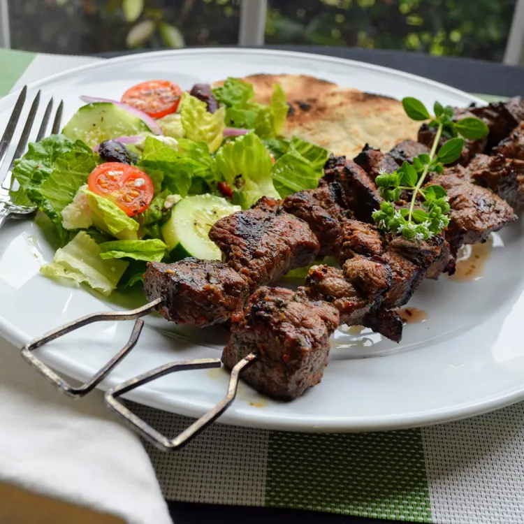

Home
Lamb Souvlaki

Lamb souvlaki with marinated pieces of lamb, threaded on skewers, and char-grilled to perfection.
I like to serve these with rosemary garlic roasted potatoes, a Greek salad, and pita bread.
Ingredients
- ⅓ cup olive oil
- 1 ½ tablespoons freshly squeezed lemon juice
- 1 ½ tablespoons red wine vinegar
- 1 ½ tablespoons chopped fresh oregano
- 2 cloves garlic, minced
- ½ teaspoon salt
- ¼ teaspoon ground black pepper
- 1 ½ pounds boneless leg of lamb, trimmed of all fat and cut into 1-inch cubes
Steps
- Step 1 : Whisk olive oil, lemon juice, red wine vinegar, oregano, garlic, salt, and pepper together in a medium bowl.
Add cubed lamb and stir until lamb is coated with marinade. Cover and refrigerate 3 hours, or overnight.
- Step 2 : Preheat an outdoor grill for medium-high heat and lightly oil the grate.
- Step 3 : Thread marinated lamb onto skewers, reserving any remaining marinade. Grill skewers until desired doneness, 10 to 12 minutes,
basting with the reserved marinade and turning occasionally for even cooking.
Grrrrr!